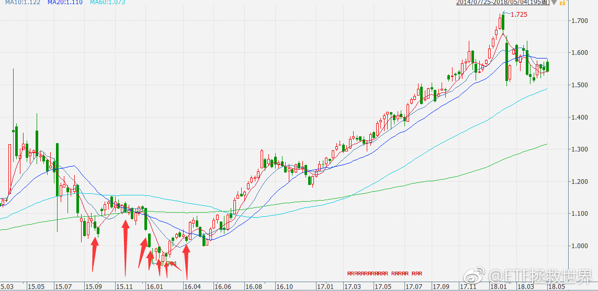
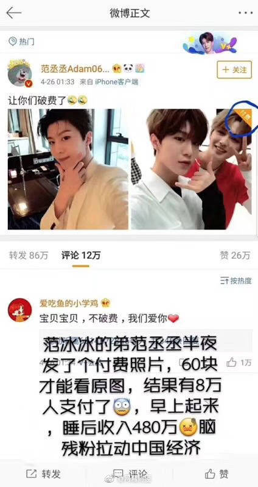
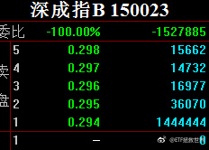
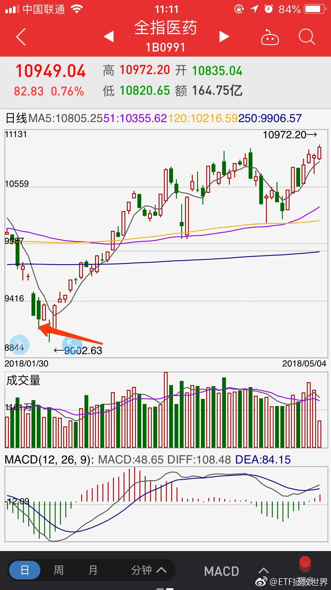

回复@点滴的过往:我从来不推荐别人投资股市。虽然我自己赚了很多，但我从来不忽悠任何人入市。我也不会给跨越房地产股市的跨大类建议。前提是，你自己希望投资股市的话，我的看法就是科学的投资指数基金胜面会非常大。所以，一旦发生任何影响股市整体的大事件，我也认为，指数比个体公司抗击打能力强。@ETF拯救世界:加车模式启动。发车时间临时改为每周评估。
回复@行走世间一只喵:不是记仇。我估计绝大多数人体会不到我的心情。自己的计划公布出来，愿意参考的，他浮亏一点来埋怨你。后面赚50%一个谢字都不会说。心情很复杂。//@行走世间一只喵:记仇哈哈@ETF拯救世界:第三轮计划恒生ETF买入全纪录 谁还记得恒生浮亏10%的时候有人在公众号埋怨我的事。 
回复@出去走走吧365:你好好翻翻我的微博。再看看发车记录，是谁在医药最黑暗的时候一车一车买成第一重仓。这叫吹？拉黑不送。//@出去走走吧365:你在吹@ETF拯救世界:大家注意观察，媒体、大v什么时候开始集体吹医药。
回复@酩酊大醉的三藏:500和环保满打满算正式开始投不到2年，大概也就1年。这就花儿也谢了？没做好3、5年不涨的准备不要投资。//@酩酊大醉的三藏:等中证500跟环保已经等得花都谢了。。。//@ETF拯救世界:回复@很多话不想说:每种花开放的时间不同。我们持仓的品种都会有疯狂的时候，不信走着瞧。@ETF拯救世界:$全指医药 sh000991$ 记住，新高不卖。不 要 卖！
回复@很多话不想说:每种花开放的时间不同。我们持仓的品种都会有疯狂的时候，不信走着瞧。//@很多话不想说:终于轮到医药火一把了//@ETF拯救世界:实在忍不住的，等13000可以平衡一点。之前不卖，坐电梯也无所谓。@ETF拯救世界:$全指医药 sh000991$ 记住，新高不卖。不 要 卖！
回复@芷蓝风:逢年过节还发红包的事了解一下。（包括38节）//@芷蓝风:别人家的偶像向粉丝收钱，我家偶像授之以渔又授之以鱼，感觉跟对了人!//@ETF拯救世界:别人家的粉丝。 @网易财经:【“为所欲为”四个字就是这么写的】范冰冰的弟弟@范丞丞Adam0616 在微博上发了个付费照片，要想看照片先要付60元，结果有8万人付款，一觉醒来赚了480万！ @来去之间 来总是不是找到了新的利润增长点了！ （via.互联网那点事儿） 
这1444444444是什么意思。活得越久，越知道活着的可贵。在金融市场，只要不死，不受重伤，资产稳步增加，爆发，增加，爆发，这样循环，最终结果都会很好。违背一些基本的原则，巨幅波动，真的很危险。不知道哪次就彻底埋进去了。所以有人说，不要在意回撤，满仓干，永远满仓。说实话，我无法认同。一次两次，十次八次没事，也许有一次就有事了。这一次可能就是你最后一次。前面的1没了，后面就剩下4了。之前做得再好，数字再长，也没意义。一次，归0。
别人家的粉丝。 @网易财经:【“为所欲为”四个字就是这么写的】范冰冰的弟弟@范丞丞Adam0616 在微博上发了个付费照片，要想看照片先要付60元，结果有8万人付款，一觉醒来赚了480万！ @来去之间 来总是不是找到了新的利润增长点了！ （via.互联网那点事儿）
你现在回头看，2月6日的临时加车 $全指医药 sh000991$ 你就会明白，危机的时候出手干会有什么后果。别人心惊胆战疯狂卖出的时候，你去接盘的结果。这次没有大笔扫货，不用着急。会有那一天，一次次正反馈应该会把你教育的坚强一点。扫货日不会太远。 